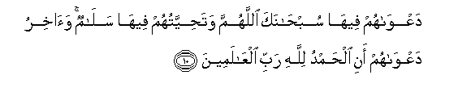

Sacred Texts Islam Index
Hypertext Qur'an Unicode Palmer Pickthall Yusuf Ali English Rodwell
Sūra X.: Yūnus, or Jonah. Index
Previous Next

The Holy Quran, tr. by Yusuf Ali, [1934], at sacred-texts.com
Sūra X.: Yūnus, or Jonah.
Section 1
1. Alif-lam-ra tilka ayatu alkitabi alhakeemi
1. A. L. R.
These are the Āyats
Of the Book of Wisdom.
2. Akana lilnnasi AAajaban an awhayna ila rajulin minhum an anthiri alnnasa wabashshiri allatheena amanoo anna lahum qadama sidqin AAinda rabbihim qala alkafiroona inna hatha lasahirun mubeenun
2. Is it a matter
Of wonderment to men
That We have sent
Our inspiration to a man
From among themselves?—
That he should warn mankind
(Of their danger), and give
The good news to the Believers
That they have before their Lord
The lofty rank of Truth.
(But) say the Unbelievers:
"This is indeed
An evident sorcerer!"
3. Inna rabbakumu Allahu allathee khalaqa alssamawati waal-arda fee sittati ayyamin thumma istawa AAala alAAarshi yudabbiru al-amra ma min shafeeAAin illa min baAAdi ithnihi thalikumu Allahu rabbukum faoAAbudoohu afala tathakkaroona
3. Verily your Lord is God,
Who created the heavens
And the earth in six Days,
And is firmly established
On the Throne (of authority),
Regulating and governing all things.
No intercessor (can plead with Him)
Except after His leave
(Hath been obtained). This
Is God your Lord; Him therefore
Serve ye: will ye not
Receive admonition?
4. Ilayhi marjiAAukum jameeAAan waAAda Allahi haqqan innahu yabdao alkhalqa thumma yuAAeeduhu liyajziya allatheena amanoo waAAamiloo alssalihati bialqisti waallatheena kafaroo lahum sharabun min hameemin waAAathabun aleemun bima kanoo yakfuroona
4. To Him will be your return—
Of all of you. The promise
Of God is true and sure.
It is He who beginneth
The process of creation,
And repeateth it, that He
May reward with justice
Those who believe
And work righteousness;
But those who reject Him
Will have draughts
Of boiling fluids,
And a Penalty grievous,
Because they did reject Him.
5. Huwa allathee jaAAala alshshamsa diyaan waalqamara nooran waqaddarahu manazila litaAAlamoo AAadada alssineena waalhisaba ma khalaqa Allahu thalika illa bialhaqqi yufassilu al-ayati liqawmin yaAAlamoona
5. It is He who made the sun
To be a shining glory
And the moon to be a light
(Of beauty), and measured out
Stages for her; that ye might
Know the number of years
And the count (of time).
Nowise did God create this
But in truth and righteousness.
(Thus) doth He explain His Signs
In detail, for those who understand.
6. Inna fee ikhtilafi allayli waalnnahari wama khalaqa Allahu fee alssamawati waal-ardi laayatin liqawmin yattaqoona
6. Verily, in the alternation
Of the Night and the Day,
And in all that God
Hath created, in the heavens
And the earth, are Signs
For those who fear Him.
7. Inna allatheena la yarjoona liqaana waradoo bialhayati alddunya waitmaannoo biha waallatheena hum AAan ayatina ghafiloona
7. Those who rest not their hope
On their meeting with Us,
But are pleased and satisfied
With the life of the Present,
And those who heed not
Our Signs,—
8. Ola-ika ma/wahumu alnnaru bima kanoo yaksiboona
8. Their abode is the Fire,
Because of the (evil)
They earned.
9. Inna allatheena amanoo waAAamiloo alssalihati yahdeehim rabbuhum bi-eemanihim tajree min tahtihimu al-anharu fee jannati alnnaAAeemi
9. Those who believe,
And work righteousness,—
Their Lord will guide them
Because of their Faith:
Beneath them will flow
Rivers in Gardens of Bliss.

10. DaAAwahum feeha subhanaka allahumma watahiyyatuhum feeha salamun waakhiru daAAwahum ani alhamdu lillahi rabbi alAAalameena
10. (This will be) their cry therein:
"Glory to Thee, O God!"
And "Peace" will be their greeting therein!
And the close of their cry
Will be: "Praise be to God,
The Cherisher and Sustainer.
Of the Worlds!"